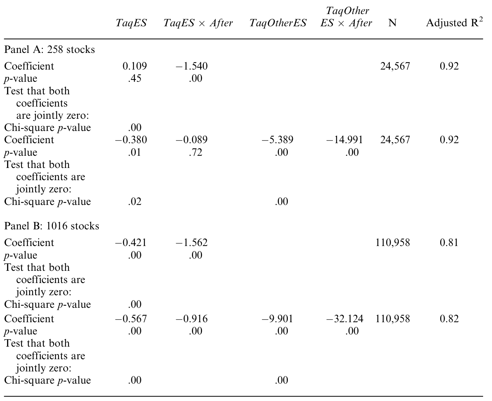
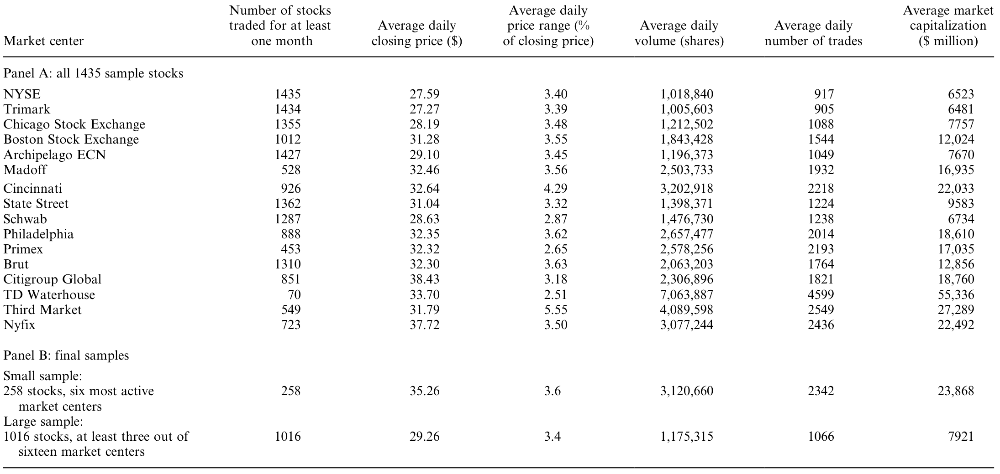
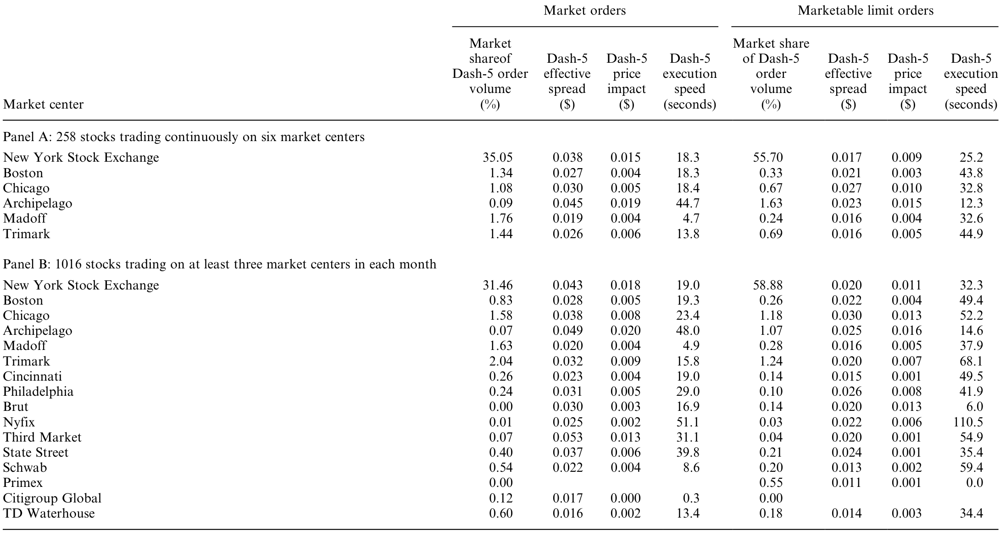
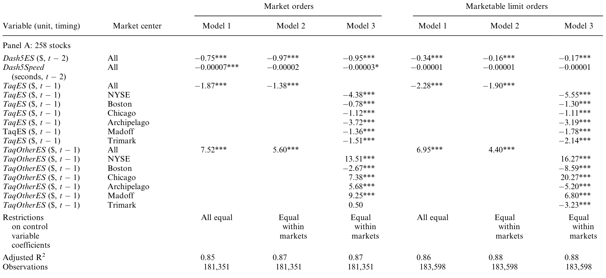
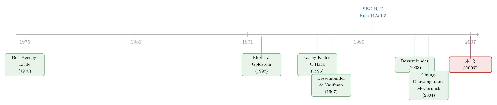

把成交质量晒在阳光下，订单就真的跟着走了吗？
本文读的是 Boehmer, Jennings & Wei (2007, Review of Financial Studies)：2001 年 SEC 强制各「市场中心」每月公布标准化的成交质量报告（Dash-5）之后，那些报告出来「价差更低、成交更快」的市场，在随后的月份里确实抢到了更多订单；更关键的是，这些报告里装着 TAQ 数据之前没有的增量信息。一句话——阳光真的让订单跟着走了。
1 一个监管者的信仰，和一个不容易回答的问题
监管者有一种近乎宗教般的信仰：阳光是最好的消毒剂。美国证监会（SEC）在介绍自己时反复强调，它的首要工作是「促进重要信息的披露」，背后的逻辑是——只要让人们掌握足够的信息，他们就会做出让市场更有效率的决策。
可这只是一个信仰。信仰需要证据。
故事的引子是这样的：在美国，一只在纽交所（NYSE）挂牌的活跃股票，它的订单可以送到很多地方去成交——纽交所自己、五家区域性交易所、若干家做 Nasdaq Intermarket 的做市商、还有八家电子撮合网络（ECN）。一笔市价单到底花了多少隐性成本、等了多久才成交，历史上没有一把统一的尺子可以衡量。于是 SEC 在 2000 年 11 月祭出了 Rule 11Ac1-5（业内昵称 Dash-5）：从此每家市场中心都要按月公布一套标准化的成交质量指标，目标是「赋予市场力量以工具，去实现一个更具竞争、更有效率的全国市场体系」。
听上去很美。但请注意这里有一个让人不安的细节：绝大多数投资者根本不自己决定订单送到哪儿。SEC 自己的 Rule 11Ac1-6 报告显示，超过 90% 的订单没有指定具体的成交市场——路由权被委托给了券商。哪怕是机构订单，业内估计也有约 80% 把路由决定留给了券商。
于是真正的问题浮出水面：
当一份报告每月公布、又被监管和客户拿着放大镜审视时，那些替别人做决定的券商，真的会因为这份报告而改变订单的去向吗？而且——这份报告里，真的有 TAQ 数据之外的新东西吗？
这就是本文要回答的两个问题。它看起来是一篇市场微观结构的论文，但骨子里，它是在替「强制披露」这件公共政策做一次体检。
2 识别策略：把「市场份额」当成因变量
要回答「成交质量好的市场是不是抢到了更多订单」，作者需要一个能把多个相互竞争的市场中心同时装进去的计量框架。他们没有用常见的面板回归，而是借来了市场营销学里一套成熟的工具——吸引力市场份额模型 (attraction market-share model)，其根基是 Bell, Keeney and Little (1975) 提出的「市场份额定理」，估计方法则沿用 Nakanishi and Cooper (1982) 的 MCI 模型。
为什么是这套模型？因为它有一个天然契合的性质：每家市场中心的份额非负、且所有份额之和恒为 1。这正是「订单要么去 A、要么去 B、要么去 C」的瓜分逻辑。
模型的核心很朴素：一只股票在第 i 家市场的成交份额 MS_i，等于它对这家市场的「吸引力」A_i 占所有竞争市场吸引力之和的比例；而吸引力本身，是各项成交质量属性（价差、速度等）的乘积式函数。
这个乘积式没法直接跑回归。这里真正关键的一步是 Nakanishi-Cooper 的「对数中心化 (log-centering)」变换：把每个变量都除以它在竞争市场间的几何均值（下文用 ~ 表示），再取对数，乘积就被拉成了一个可以用线性方法估计的式子：
$$ \log\!\left(\frac{MS_{i}}{\widetilde{MS}}\right) = (\alpha_i-\tilde{\alpha}) + \sum_{k}\beta_k \,\log\!\left(\frac{x_{ik}}{\tilde{x}_{k}}\right) + \log\!\left(\frac{\varepsilon_i}{\tilde{\varepsilon}}\right) $$
直觉上，左边问的是「这家市场的份额，比所有竞争对手的『平均水平』高还是低」；右边问的是「它在各项成交质量上，又比平均水平好还是差」。β_k 于是有了一个干净的解读：当一家市场的某项质量相对竞争对手改善 1%，它的相对市场份额会变动百分之几。这恰恰就是「订单是否追着成交质量走」的弹性。
作者把它落到两条具体方程上：方程 (7) 用于第一阶段的事件研究，方程 (8) 用于主分析。
3 事件研究：Dash-5 之前 vs. 之后
要论证「是 Dash-5 这份公开报告改变了行为，而不仅仅是成交质量本身在起作用」，作者用了一个聪明的对照设计。
他们刻意挑了一个横跨 Dash-5 实施前后都能算的成交质量指标——用纽交所 TAQ 数据算出来的有效价差 (effective spread)。这是衡量成交成本的标准尺子，2001 年 Dash-5 上线之前就有、之后也有。逻辑是这样：如果券商一直就在看成交成本路由订单，那么市场份额对有效价差的敏感性，在 Dash-5 前后应该没什么变化；可如果是「把成交质量摆上台面」这件事本身改变了行为，那么实施之后，这个敏感性应该变大。
结果正是后者：Dash-5 实施之后，市场份额对成交成本的敏感性显著上升。如表 3 所示，方程 (7) 的估计把这种「敏感性的跳变」量化了出来。

Table 3: summarizes the regression results for Equation (7), estimated
作者很克制，没有把这说成铁板钉钉的因果——毕竟同期市场结构本身也在变（十进制报价、自动化撮合都在这几年发生）。但这个结果至少给出了一个强有力的暗示：强制披露给了券商一个额外的理由，去把量化的成交质量纳入路由决策。这也呼应了另一类「公开披露改变行为」的证据——当做空数据从延迟公布变成实时公开后，市场效率也随之改变（参见《短卖单不再是「先知」：当做空数据被实时公开之后》）。
4 数据：两个样本，一把 TAQ 做的「照妖镜」
先把数据讲清楚，因为这篇论文的说服力，很大程度上来自它对数据陷阱的处理。
样本期是 2001 年 6 月到 2004 年 6 月（TAQ 数据从 2000 年 6 月起）。起点是 NYSE 主文件里 2561 只非优先股证券，经 CRSP 股票代码筛掉外国注册公司、封闭式基金、ADR 等，再剔除三只股价超过 $1000 的票（伯克希尔 A/B 和 Security Capital），最终留下 1435 只 NYSE 挂牌股票。
为了平衡「纳入的市场数」和「纳入的股票数」，作者构造了两个样本：
- 小样本：
258只在六家最活跃市场中心上连续成交的股票。这六家覆盖了截然不同的市场结构——NYSE、两家区域所（波士顿、芝加哥）、两家 Nasdaq Intermarket 做市商（Madoff、Trimark）、一家 ECN（Archipelago）。 - 大样本：
1016只在任一月份至少在 16 家头部市场中的三家成交的股票，市值更低、交易更不活跃，更能代表总体。
如表 1 所示，两个样本的描述统计印证了这种取舍：小样本偏向高市值、高活跃度的大盘股，大样本则更接近全市场分布。

Table 1: summarizes that the large sample includes lower capitalization
这里有两个细节，体现了作者的谨慎。其一，他们主动剔除了 Instinet 和 Island（Inet）——因为这两家在样本期内因 Dash-5 数据涉嫌不实而被 SEC 处罚（罚款 220 万美元）。这一脚踢得很关键：它既排除了已知的「脏数据」，又反过来说明 Dash-5 报告确实被监管巡查，从而提高了对其余市场报告的信心。其二，全样本里 NYSE 一家就吃下了 81% 的市价类订单、约 91% 的 Dash-5 订单——市场份额高度倾斜，这也正是为什么必须用份额模型而非简单回归。
至于成交质量本身，Dash-5 报告只对市价单和「可成交限价单」披露三个核心指标：有效价差（成交价相对收单时 NBBO 中点的偏离的两倍，衡量隐性成本）、价格冲击 (price impact)（订单的永久性信息成分，反映其「难度」）、执行速度 (execution speed)（从收单到成交的时间）。如表 2 所示，各市场在这三项上差异巨大——NYSE 的订单普遍含有更多信息成分，Archipelago 也像是知情订单的去处。

Table 2: provides descriptive statistics for both samples. We report
而真正把这篇论文从「相关性」往「增量信息」推进一步的，是作者在附录里做的一件事：拿 TAQ 算出的成交质量和 Dash-5 报告的成交质量逐一对照。他们没有发现系统性的不一致。这意味着——后面主分析里只要控制住 TAQ 指标，Dash-5 报告里剩下的解释力，就是它独有的增量信息。
5 反转：报告里真的有「新东西」
到这里，一个自然的质疑会冒出来：Dash-5 报告会不会只是把 TAQ 早就有的信息换个包装重说一遍？如果是，那它对政策的意义就大打折扣。
这正是全文最漂亮的一击。作者在主分析（方程 8）里同时放进 TAQ 口径的成交成本和 Dash-5 口径的成交质量，看后者在控制住前者之后还剩多少解释力。
答案是：剩得不少。当一家市场的 Dash-5 有效价差或成交时间相对竞争对手偏高时，它在随后会丢失订单流。 如表 4 所示，方程 (8) 的估计在控制了 TAQ 成交成本等多个因素之后，Dash-5 的价差与速度依然显著地解释了市场份额的变动。

Table 4: presents estimation results for Equation (8) with three
这件事并不 trivial，因为 Dash-5 报告有一堆先天缺陷：它只覆盖约三分之一的总订单流、滞后一个月发布、不经审计、对底层订单数据的聚合方式很敏感。在这么多噪声之下，它仍然携带了增量信息——这是对「强制披露」最有力的一票。
但作者也诚实地指出了另一面的反转：糟糕的 Dash-5 表现并不意味着立刻被市场淘汰。至少在中期，有一部分订单流对价差和速度的差异无动于衷。为什么？因为有些市场在价差和速度捕捉不到的维度上竞争——比如专门处理难成交的订单，或者干脆给券商支付「订单流报酬 (payment for order flow)」。换句话说，成交质量是竞争的一条主线，但不是唯一一条。这一点在 Table 6 的分市场、分订单规模的结果里也相当一致。
把这两面合起来，本文的核心贡献就清楚了：
强制信息披露确实改变了「替别人做决定的人」的行为——成交质量好的市场抢到更多订单，且报告本身提供了原先没有的信息。但这种竞争压力是有限度的：当一个市场能在「报告照不到的角落」提供别的价值（难单处理、订单流付费）时，差的成交质量也未必让它出局。
6 文献脉络
这条研究线的演进，是一个「先比较、再追问、最后做实验」的过程。
最早的一批工作关心的是「不同市场的成交质量到底差多少」。Blume and Goldstein (1992)、Lee (1993) 比较了 NYSE、区域所与 NASD 之间的成交价；Easley, Kiefer and O'Hara (1996) 用「奶油撇取 vs. 利润分享」的视角解释了被购买订单流（purchased order flow）的角色；Huang and Stoll (1996)、Bessembinder and Kaufman (1997) 则系统比较了做市商市场与拍卖市场的成交成本。这一阶段的关键词是比较。
接着，一个自然的问题是：成交成本的差异，到底是结构性的，还是只在某些时候出现？Bessembinder (2003b) 给了一个精彩的答案——他发现 Nasdaq Intermarket 的成交成本只在它报价不具竞争力时才偏高；一旦报价有竞争力，差异就微乎其微。这把问题从「市场之间差多少」推向了「成交质量是随时间、随报价而变的」。

然后，真正悬而未决的一步是：既然成交质量在市场间、在时间上都有差异，那么做路由决策的人，到底有没有把这些差异考虑进去？过去的数据条件让这个问题几乎无法回答。Chung, Chuwonganant and McCormick (2004) 触及了定向订单流与成交成本的关系，Boehmer (2005) 则系统刻画了美国股市成交质量的多个维度。
本文所处的位置，正是接住了这最后一问。借着 Dash-5 这场监管自然实验，作者第一次能直接观察「成交质量的变化 → 订单路由的反应」，并把强制披露的增量作用单独识别出来。如果说前人是在描述这个市场，本文则是在检验人们如何对这个市场的信息做出反应——而这恰恰是把微观结构问题升格为公共政策问题的那一跃。
把视野再放宽一点，这篇 2007 年的论文，和后来一系列「监管透明度实验」是同一血脉。债券市场上那场被监管钦定的透明度实验（参见《掀开交易商的「桌布」：一场被监管钦定的公司债透明度实验》），以及今天对散户订单成交质量地形的重新丈量（参见《集中，到底是谁的福利？——一张散户订单的旅行账单》），问的都是同一个母题：当监管把成交质量摆上台面，市场会如何重新组织自己？
7 评论与延伸（Q&A + 研究方向）
(a) 几个可能的疑问
Q：既然 90% 以上的订单都不指定市场，券商凭什么要在意 Dash-5？
因为券商对客户负有「最优执行 (best execution)」的受托责任，而 Rule 11Ac1-6 又要求他们披露自己的路由实践和订单流付费安排。Dash-5 给了券商一个可以向客户和监管轻松交代的量化理由——把订单送到报告好看的市场，是一个容易自证清白的决策。激励不在投资者那头，而在券商的合规与声誉那头。
Q：作者怎么排除「成交质量本身在起作用、和 Dash-5 公开无关」？
靠两件事。一是事件研究（方程 7）：用前后都能算的 TAQ 有效价差，证明市场份额对成交成本的敏感性在 Dash-5 之后变大——质量没变，是「公开」让反应更强了。二是主分析（方程 8）里同时放进 TAQ 和 Dash-5 指标，看 Dash-5 在控制住 TAQ 之后还剩解释力。两条腿走路。
Q：Dash-5 不是有 220 万美元的造假罚单吗？这数据还能信吗？
这恰恰被作者用成了优势。他们剔除被罚的 Instinet 和 Island，并在附录里把 Dash-5 与 TAQ 逐一对照，没发现系统性偏差。更重要的是，罚单证明 Dash-5 确实被监管巡查——这反而提高了对其余市场报告可信度的信心。坏消息被转化成了识别上的好消息。
Q：为什么有些市场成交质量差，却没被淘汰？这不是和「订单追质量走」矛盾吗？
不矛盾，是「质量」的维度不止价差和速度。有些市场专门接难成交的订单，有些靠订单流付费买订单。价差和速度照不到的地方，仍是竞争的战场。所以本文说的是「成交质量是竞争的一条主线」，不是唯一的线。
Q：为什么用市场份额模型，而不是直接对成交量做回归？
因为路由是一个瓜分问题：订单去了 A 就不会去 B，所有市场份额必须非负且加总为 1。普通回归不保证这点，而 Bell-Keeney-Little 的吸引力模型天然满足，再经对数中心化就能线性估计。模型选择本身就是对经济结构的尊重。
Q：这篇 2007 年的结论，在今天高频、暗池主导的市场里还成立吗？
要打个问号。样本期（2001–2004）正值十进制报价、撮合自动化的转型早期，订单流也远没有今天碎片化。今天大量散户订单被内部化、走批发商和暗池，Dash-5（后来的 Rule 605/606）覆盖的口径与权重都变了。结论的「方向」大概率仍在，但「量级」需要重新校准。
(b) 几个可能的研究问题与提案
1. 把同样的「披露 → 路由」实验搬到公司债市场
- 【经济故事】股票有 Dash-5/Rule 605，公司债有 TRACE 的事后透明度，但缺少一份标准化的、按交易商/市场分组的成交质量月报。如果监管要求做市商披露分组的有效价差与成交速度，订单流会不会像股票一样向「报告好看」的交易商集中？这直接关系到信用市场的竞争与流动性。
- 【可行性】中。TRACE 增强版数据 + 交易商身份（学术版可申请）可以构造交易商层面的成交质量；识别可借鉴本文的事件研究思路，利用 TRACE 透明度分阶段扩容（2002–2005）做断点。难点在于公司债没有 NBBO，价差基准的构造更脆弱。
2. 外资持有人对成交质量披露的反应是否不同？
- 【经济故事】机构、尤其是跨境机构，更有资源消化 Dash-5 这类报告。一个自然的猜想是：外资持有比例高的股票，其订单流对披露的成交质量更敏感。这把「披露改变行为」与「谁在看披露」结合了起来。
- 【可行性】中。需要把 13F/国际持仓数据与市场份额数据按股票-月合并，在本文的份额模型里加一个「外资持股 × Dash-5 质量」的交乘项。识别上要小心外资持股的内生性（可用指数纳入等冲击做工具）。与《外资真是「蝗虫」吗？》的问题意识相通。
3. 「报告照不到的维度」到底值多少钱？给订单流付费定价
- 【经济故事】本文留了一个尾巴：部分订单对价差/速度无动于衷，因为有订单流付费等别的价值。能否把「在差成交质量下仍留住订单」的那部分份额，反推成订单流付费的隐含价格？这相当于给「卖订单流」这门生意做一次结构估计。
- 【可行性】中偏低。需要 Rule 11Ac1-6/606 的订单流付费披露 + Dash-5 成交质量，结构上要设定券商的目标函数。数据可得，但把「无动于衷的份额」干净地归因到付费而非其他维度，识别很难。
4. 强制披露的「疲劳效应」：报告看久了还有用吗？
- 【经济故事】本文证明 Dash-5 上线初期改变了行为。但披露的边际信息会衰减——市场学会了，报告就变成例行公事。检验份额对 Dash-5 质量的敏感性是否随时间单调下降，能直接回答「披露作为政策工具有没有保质期」。
- 【可行性】高。把样本期按季度切片，在份额模型里让
β随时间变动，或做滚动估计即可。数据完全现成（Rule 605 报告至今仍在公布），是一个 doable 的扩展。
我的判断
这篇论文最值得称道的，是它把一个虚的政策信仰（「阳光能改善市场」）做成了一个实的可检验命题，并且在识别上层层设防：事件研究锁定「公开」的作用、TAQ 对照锁定「增量信息」、剔除被罚市场把脏数据变成识别优势。结论既不夸大（承认无法宣称严格因果），也不回避反例（承认部分订单流无动于衷），分寸感很好。
对识别我有两点保留。其一，样本期正撞上市场结构剧变（十进制化、自动化撮合、NYSE 2003 年自动报价决定），事件研究里「Dash-5 之后敏感性上升」很难和这些同期冲击完全切割——作者也坦承了这点，但读者要记得这个 caveat 始终悬着。其二，份额模型把「吸引力」设成属性的乘积式，函数形式相对刚性；如果券商的真实路由规则有阈值或非线性（比如「只要不是最差就行」），模型可能系统性地低估或高估弹性。
后续我最想看到的，是把这套框架放到今天重新跑一遍：当散户订单被批发商内部化、暗池占比飙升、Rule 605 几经修订之后，「披露 → 路由」的弹性是变强了还是被稀释了？以及，把它从股票延伸到信用市场——那里既缺乏标准化的成交质量报告，又最需要竞争压力。这篇 2007 年的论文，给所有这些问题提供了一个干净的起点。
参考文献
- Bell, D. E., R. L. Keeney, and J. D. C. Little (1975). A Market Share Theorem. Journal of Marketing Research 12, 136–141.
- Bessembinder, H. (2003b). Quote-Based Competition and Trade Execution Costs in NYSE-Listed Stocks. Journal of Financial Economics 70, 385–422.
- Bessembinder, H., and H. Kaufman (1997). A Cross-exchange Comparison of Execution Costs and Information Flow for NYSE-Listed Stocks. Journal of Financial Economics 46, 293–319.
- Blume, M., and M. Goldstein (1992). Differences in Execution Prices Among the NYSE, the Regionals, and the NASD. Working Paper 4–92, Rodney White Center, Wharton.
- Boehmer, E. (2005). Dimensions of Execution Quality: Recent Evidence for U.S. Equity Markets. Journal of Financial Economics 78, 463–704.
- Chung, K., C. Chuwonganant, and D. T. McCormick (2004). Order Preferencing and Market Quality on NASDAQ before and after Decimalization. Journal of Financial Economics 71, 581–612.
- Cooper, L. G., and M. Nakanishi (1988). Market Share Analysis. Kluwer Academic Publishers, Boston, MA.
- Easley, D., N. Kiefer, and M. O'Hara (1996). Cream-Skimming or Profit-Sharing? The Curious Role of Purchased Order Flow. Journal of Finance 51, 811–834.
- Huang, R., and H. Stoll (1996). Dealer Versus Auction Markets: A Paired Comparison of Execution Costs on NASDAQ and the NYSE. Journal of Financial Economics 41, 313–357.
- Lee, C. (1993). Market Integration and Price Execution for NYSE-Listed Securities. Journal of Finance 48, 1009–1038.
- Nakanishi, M., and L. G. Cooper (1982). Simplified Estimation Procedures for MCI Models. Marketing Science 1, 314–322.
- Boehmer, E., R. Jennings, and L. Wei (2007). Public Disclosure and Private Decisions: Equity Market Execution Quality and Order Routing. Review of Financial Studies 20(2), 315–358.